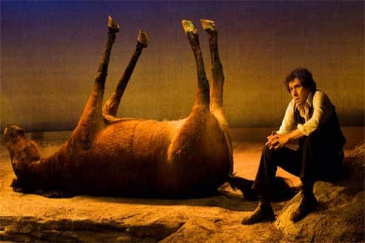

Troy is a game veteran of a decade's standing, and a lover of women, literature, travel and freedom. He is also the author of The Seven Laws of Seduction. Visit his website at Troy Francis.


With her long dark hair, her unblemished skin and her slender, erotically-toned body, Andrea was the most beautiful girl I had ever slept with. And when you’ve met your ideal women it’s kind of hard knowing that after today you will never speak to her again.
But I knew only too well what I had to do.
Here’s the problem. Men get into game because they’re frustrated and unhappy with their sex lives. They read material on sites like ROK and in books. They watch pick-up videos on YouTube. They go out and practice hitting on girls.
Their first attempts are horrible. But over time they get better. Through sheer repetition and the implementation of game principles they find themselves getting positive attention.
They have sex, often for the first time. The girls aren’t of earth-shattering quality, but still. They start to feel that fabled sense of abundance that pick-up gurus always talk about. Their confidence soars.
Now, all of a sudden, they are getting attention from higher-quality girls. Real hotties. Then one day an approach is made. A girl who could be a model—perhaps she is a model—gives out her number. A date is arranged. Sex happens.
Success. And yet it is at this point, when they guy has finally got everything he wanted, that he is in the danger zone. Why? Because if he is not a natural who is used to the attentions of extremely attractive women then it is likely he will get obsessed, fixated, and develop what we often call ‘oneitis’.
And once he has that, he is in a very difficult position. He will be so unwilling to let go of his dream girl that he will endure all manner of henpecking and privations from her, she will lose attraction for him, and eventually she will dump him.
If you are someone who had to learn game, like I did, rather than having it down naturally, then the next stage in your journey is to learn how to walk away from girls too.
Years ago, I found myself in Romanian hell. Andrea. I still have a few old photos of her on my computer (not to be advised, by the way—really you should junk all reminders).
It would be impossible to construct a girl from scratch who was closer to what I thought perfection was than Andrea.
All men have their own individual idea of what a ten is. I’m sure mine is very different to yours. But for me, Andrea was a ten. In some way she was a culmination of all femininity that I had craved my entire life. She was the princess in the fairy tale I’d read at school and she was the porn star I’d coveted on screen. She was a raven-haired PhD with bewitching eyes, a gypsy wildness and a pert little ass. I was beyond smitten. She engulfed me.
The problem was she had a boyfriend—and it wasn’t me. I was her bit on the side. She wanted me for sex at weekends, and to go back to her boyfriend during the week.
Nowadays that would seem like an ideal arrangement, but back then it seemed intolerable (what was I thinking?!) You see game had given me the skillset to access hotter girls but I hadn’t learned to control my feelings around them—yet.
I still had that same scarcity mentality that had stuck with me since I was a kid. That sense that ‘if I don’t hang on to her I will never get another like her ever again.’ And because Andrea was my ideal, or so I thought, I wanted to lock her down. I wanted her to leave the boyfriend and come live with me.
I wanted to imprison myself with a girl who would brazenly cheat on her boyfriend.
At first our rendezvous were exciting because they were all about sex. We would meet in hotel rooms in the afternoon and have sex all through the night, the perfumed sheets crumpled, ripped and thrown on the floor. But I had to ruin everything by following the beta playbook: ‘If it’s this good then I want her forever. She has to leave him for me.’
I pressured her and she became cold. Once a source of stimulation to her, a nexus of sexual desire, now I was an irritant. She already had a boyfriend, someone to order her around and put pressure on her. I was the lover. I was the one getting all of the benefits with none of the accountability. Why didn’t I understand that?
She withdrew. I panicked. Intoxicated with oneitus, I tried ever harder to hold onto her. Predictably, this just pushed her further away.
In the end, I asked her outright to define our relationship now and to tell me where we would be in the future. This is of course precisely the opposite of the correct order of things. She should have been asking me those questions.
‘I can’t promise anything,’ she said.
It was at that point that I finally came to my senses. I realised that there was simply nothing in this situation for me any more. That I was not getting what I wanted and that there was slim chance and no guarantee that things would change going forward.
Immediately, I hardened up. This was it. There would be no more back-and-forth. When she messaged me that evening (she was still using me as an emotional tampon, even though she was no longer sleeping with me), I replied curtly. And then I deleted her number and all of her previous messages. Now I had seen the light. Whatever happened, we were done. However much it hurt in the moment, there would be no return.
I had lost the girl of my dreams. I had had her, and, through my own naivety and lack of game-savviness, I had ruined everything. This was my worst beta nightmare come true. The removal of my ‘ideal other.’
And yet, surprisingly, I felt light and free. The most terrible thing in the world emotionally (or so I thought) had happened and I was… okay.
In the days and weeks that followed I began to smile and laugh again, something I hadn’t done for an age. I started hanging out with friends once more. I enjoyed life anew. I was filled with a new sense of excitement and purpose. I traveled to Ibiza and had one of the best summers of my life. I began writing a new novel. I slept with more girls than ever before.
Perhaps most significantly of all, I realised something huge. That I didn’t actually want a girlfriend. That I didn’t want to be tied down to ‘someone special.’ I wanted freedom. I wanted to experience life with boldness and magnificence.

That whole experience taught me a huge lesson. There is no one ‘ideal other’. And the loss of some girl, no matter how ‘hot’ you might think her, won’t kill you. In fact, it might just be a weight off your shoulders. And from that point on I was never frightened to walk away from a girl again.
After all, the worst had already happened. I’d already lost my dream girl. And I had not only survived, I was thriving.
There is an old saying ‘if you’re riding a horse and it dies, get off.’ It contains a lot of wisdom. Consider whatever situation you find yourself in. Are you happy? Are you getting what you want out of it? Because if you’re not then you might just have to face up to the fact that your horse is dead and that it’s time to get off.
And trust me when I tell you that doing so might just be the best thing you’ll ever do.
For a compilation of all Troy’s best game writing, advice and techniques from the last four years buy his new book How To Get Hot Girls Into Bed
Read Next: Ten Lessons About Girls I’d Teach My Teenage Self